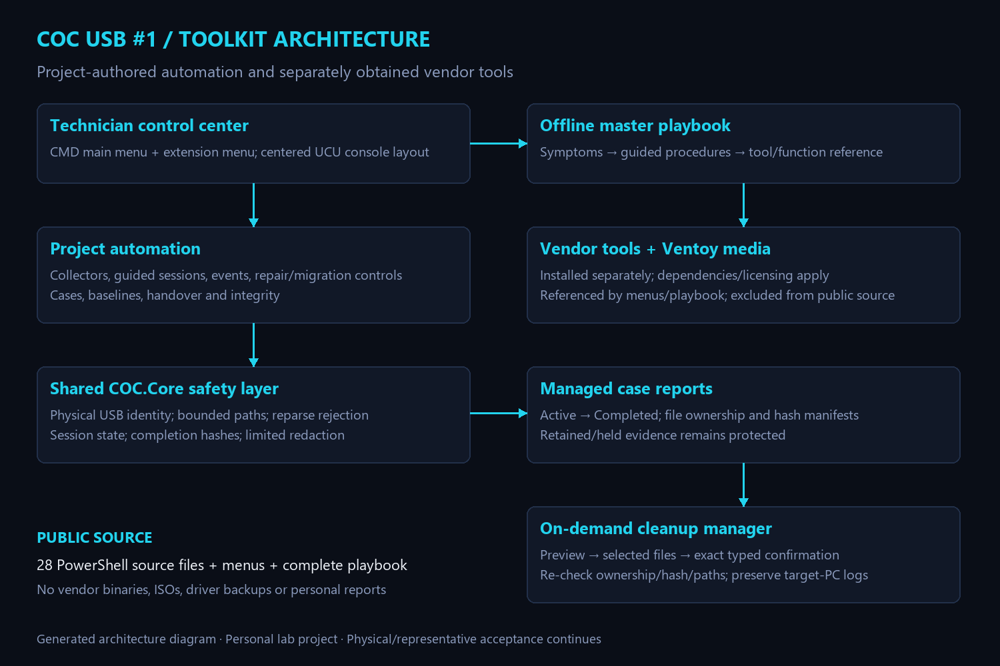

COC · OCTOBER 13, 2026
Building a USB Technician Toolkit I Can Trust
Turning a collection of support tools into a safer, documented workflow—and being clear about what has actually been tested.
I wanted a technician USB that would help me work through a problem, not just hold a long list of executables. The existing drive already had Ventoy, seven boot ISOs, working tools, driver backups and a technician menu. The useful work was bringing those pieces together without breaking what already worked.
Preserving the working toolkit
The update started with physical USB identity checks and SHA256 baselines. The installer guards the expected device and existing file versions, preserves verified rollback copies and installs the active menu last. Its failure path was tested with disposable files and an injected error before the real deployment.
That distinction matters: a mocked storage test can exercise rollback logic, but it cannot prove how a USB will behave under every power-loss or firmware condition. After installation, the files and backups were checked independently.
Building our own automation
The public repository includes 28 project-authored PowerShell source files alongside the active menus. Existing laptop, battery, driver and network collectors were reused rather than replaced with duplicate logic. A coordinator sends menu-created output into managed sessions and records completed file hashes.
The additions cover security and enterprise status, filtered event diagnostics, BitLocker status and protector IDs, Windows repair previews, controlled migration, case indexes, baselines, comparisons, handover notes and integrity checks. A successful collection is evidence to review, not a certification that the computer is healthy or secure.
Making cleanup deliberately narrow
Cleanup was one of the more important engineering problems. A folder called Reports is not sufficient proof that every file in it belongs to the toolkit. The manager previews eligible files, supports selective choices, requires an exact typed confirmation and checks ownership, paths and hashes again.
Incomplete sessions, retention holds, changed files and untracked personal content remain protected. The tests cover those boundaries using disposable data. The manager does not clear Windows event logs or treat target-PC evidence as disposable toolkit output.
Writing the playbook around problems
The master IT Technician Playbook has 18 sections, 27 guided workflows and 62 primary tool/function entries. It combines symptoms, questions, decision guidance, commands, dependencies and escalation boundaries, with offline search and navigation. The earlier recovery handbook is preserved rather than discarded.
Account and BitLocker procedures use authorized owner or administrator recovery routes. Recovery passwords are not ordinary report content. The playbook itself does not execute repairs; command examples still require judgment and authorization.


Bringing the interface into UCU
The playbook reuses the same Unified Console UI tokens as my dashboards. The terminal uses a cyan-on-dark approximation, a text shield emblem and centered headings with aligned options underneath. A harmless console demo helped check the actual appearance before the branding was installed. The selection prompt stays at the left by choice.
What the evidence supports
The functional deployment matched all 257 payload files and 11 original-script backups. A broader pre-branding check passed for 552 recorded toolkit assets, including the seven ISO hashes. After branding, all five changed files and four rollback backups matched. Twelve navigation paths and the disposable installer success/rollback cases passed.
Physical boot testing of all seven ISOs, representative repair and migration/restore exercises, administrator-only enterprise checks and some GUI/dependency validation still need execution on suitable targets. Hash checks are not boot tests, and a working menu is not proof that every vendor tool is ready in every environment.
Publishing a useful source edition
The repository shares our scripts, launchers, complete playbook, architecture and public evidence. It does not redistribute vendor executables, ISOs, driver backups or diagnostic reports. The hardware serial is replaced with a configuration placeholder so the public source cannot silently target my particular device.
This is personal lab work. The main lesson was to make the safe path observable: preserve the existing system, test the failure paths, record what passed and leave the remaining acceptance work visible.
Explore the source, playbook and validation record ↗
← Back to the engineering journal